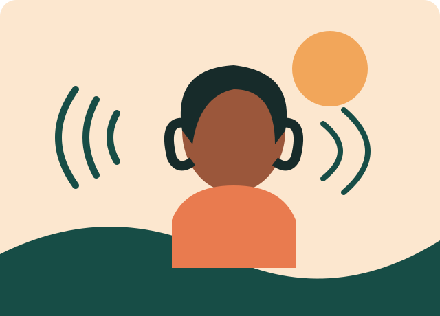

IDENTITY & BELONGING · AUDIO STORY
The sound of starting over.
Sometimes home is a place. Sometimes it's a sound you carry with you.

Listen to the story
Audio file placeholder: add your recorded narration at ../assets/audio/starting-over.mp3 to activate playback.
No audio file is bundled with this starter project. The full text transcript is available below.
READ INSTEAD
Full transcript
Transcript of “The sound of starting over”
NARRATOR: When I moved to a new city, I thought I would remember home through photographs. I saved pictures of familiar streets, the front door, and the tree that leaned over our yard.
But the first thing that brought me back wasn't a picture. It was a sound: a kettle singing in the kitchen, followed by my mother's laugh from the next room.
I started recording little things. Rain against the window. The call of a vendor down the street. My friends talking over one another as the evening turned gold. They were ordinary sounds, but together they made a kind of map.
At first, I listened because I missed what I had left behind. Then I noticed the new sounds around me, too: footsteps in the hallway, a neighbor greeting me by name, the bus slowing at the corner.
Starting over did not mean replacing one home with another. It meant learning that belonging can grow slowly, through small moments we choose to notice.
Now I keep the recordings. Not because I want to live in the past, but because they remind me that home is not only a place I came from. It is also something I can help make, wherever I am.
[End of transcript]
Watch with captions
Optional video version. Add a video file at ../assets/video/starting-over.mp4; the captions track is included as a starter example and must be synced to your final recording.
The video version is intended to show the listener's journey from remembering home to noticing a new sense of belonging.